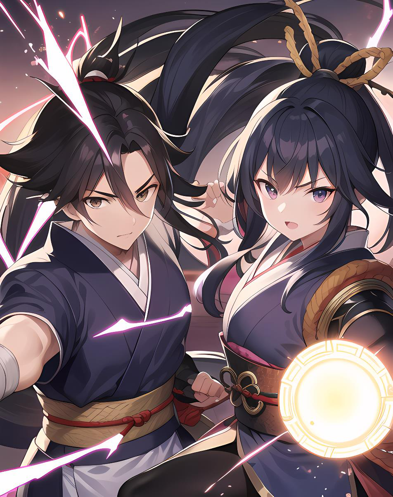

Diseño de jutsuAtaque · Potenciar · Invocación
Fundamentos del Ki
Un jutsu gasta su nivel en puntos de Ki aunque no se lance con éxito o aunque no golpee al enemigo. Al crear un personaje se tienen 0 PK: hay que comprarlos. Se recuperan 1d6 tras un combate y 2d6 tras dormir una noche entera (1d6 si se descansa mal).
Para acertar con un jutsu de ataque, la misma tirada sirve para superar la dificultad del jutsu y la defensa del enemigo: 3d6 + Control de Ki. Si sacas un 8 y tienes Control de Ki +2, tu total es 10: compruebas que llegue a la dificultad del jutsu (ej. 9 para nivel 1) y a la defensa del rival.
Los tres tipos y su presupuesto
| Tipo | Nivel 1 | Por nivel extra | Ejemplo nivel 3 |
|---|---|---|---|
| Ataque | 6 PdJ | +3 PdJ | 12 PdJ |
| Potenciar | 2 PdJ | +2 PdJ | 6 PdJ |
| Invocación | 2 PdJ + PC criatura | +1 PC = +1 PdJ | 2 + 4 PC = 6 PdJ |
Un jutsu se puede mejorar gastando PdJ. Cada nivel extra cuesta lo indicado arriba. El coste final en PC es igual a su nivel; su gasto de Ki también. Las tablas de abajo usan exactamente ese presupuesto.

Efectos de ataque — texto completo del PDF en tabla
| Efecto | Coste | Detalle completo |
|---|---|---|
| Daño +1 | 1 PdJ | +1 al daño (cada +3 = 1d6). Sin compra de daño, el jutsu no daña. |
| A distancia | 1 PdJ | El jutsu afecta a distancia. |
| Objetivo adicional | 3 PdJ | Afecta a un objetivo adicional (si no existe, el efecto se pierde). También debe superar la defensa del objetivo adicional. |
| Ignora absorción | 3 PdJ | El daño ignora la absorción del objetivo. |
| Incapacitado | 2 PdJ | Hace que la víctima tenga un −1 a ataque, daño y jutsus en el siguiente turno. Acumulable hasta −3 con 6 PdJ. |
| Evitar movimiento | 2 PdJ | Duración 1 turno (la víctima puede atacar). Con 6 PdJ es 1d6 turnos (3 turnos equivalen a 1d6 en la práctica). |
| Congelar | 5 PdJ +2/turno | La víctima no puede atacar 1 turno (5 PdJ el primer turno, 2 PdJ cada turno adicional; cada 3 turnos = 1d6). Se rompe si el objetivo recibe daño. |
| Robar vida | 2 PdJ | Roba 1 PV si el contrincante no lo absorbe. Nunca por encima del PV máximo. Recuperación mejorada no se aplica aquí. |
| Robar Ki | 2 PdJ | Roba 1 PK si el contrincante tiene PK. Nunca por encima del PK máximo. Recuperación mejorada no se aplica aquí. |
Críticos especiales en jutsus de ataque: al sacar crítico se puede elegir aumentar el robo de vida/Ki (si el jutsu los usa) o aumentar la duración de los efectos en 1 turno (cada +3 PdC = 1d6 turnos).
Efectos de potenciar — texto completo del PDF en tabla
| Efecto | Coste | Detalle completo |
|---|---|---|
| Otra persona | 1 PdJ | Potenciar a otra persona: 1 PdJ. Se puede seguir usando en uno mismo, pero hay que elegir. Si se escoge N veces, permite potenciar a N personas a la vez. |
| A distancia | 1 PdJ | Permite potenciar, curar o aplicar otro efecto a alguien sin tener que tocarlo. |
| Todo el grupo | 4 PdJ | Potenciar a todo el grupo. Esta opción ya incluye la distancia. |
| Característica +1 | 1 PdJ | Otorga +1 en una de las 9 características (Absorción, Ataque melee, Defensa melee, Daño melee, Ataque distancia, Daño distancia, Defensa distancia, Iniciativa, Control de Ki) durante 1d6 turnos. |
| Curación | 1 PdJ | Cura +2 PV (cada 3 PV = 1d6). |
| Invisibilidad | 1 PdJ | Durante 1 turno. Se rompe cuando se ataca. |
| Volar | 1 PdJ | Durante 1 turno. Unos 5 m por turno con ataque, 10 m sin atacar. |
| Respirar bajo el agua | 1 PdJ | Permite respirar bajo el agua durante 1d6 minutos; cada minuto extra se pierde 1d6 PV por asfixia. |
| Duplicado | 4 PdJ | Durante 1d6 turnos. Saca un doble exacto a tu lado pero con solo 5 PV. No puede duplicarse todo el grupo. No tiene PK propios; los PK para sus jutsus son los globales del invocador. El duplicado actúa inmediatamente tras aparecer. PV adicionales: +1 PdJ = +5 PV. |
| Espinas | 1 PdJ | Cuando se recibe daño cuerpo a cuerpo, se hace daño al atacante tanto como PdJ gastados (cada +3 = 1d6). |
| Potenciar habilidad | 1 PdJ | Otorga +1 a una habilidad durante 1d6 minutos. |
| Visión verdadera | 4 PdJ | Capaz de ver el Ki de la gente durante 1d6 turnos (o minutos fuera de combate). Permite ver a alguien invisible con jutsu. |
| Teletransporte | 1 PdJ / 5 m | Teletransporte: 1 PdJ por cada 5 metros. Puede atravesar sólidos. |
Invocación
Requiere 2 PdJ (la base) más tantos PdJ como PC tenga la criatura; cada PdJ adicional la mejora en 1 PC, y se gasta igual que en un personaje, salvo el Ki, que lo gasta del invocador. Ejemplo: una criatura de 4 PC es un jutsu de 6 PdJ, nivel 3. Cada turno invocada cuesta 1 punto de Ki; solo una criatura por combate, presente hasta el final, la desinvocación, el desmayo del invocador, quedarse sin PK o llegar a 0 PV (desaparece). Las criaturas parten del perfil base humano: PV 20, defensas 10, daño 1d6.
Dificultades
| Nivel | 1 | 2 | 3 | 4 | 5 | 6 | 7 | 8 | 9 |
|---|---|---|---|---|---|---|---|---|---|
| Necesita | 9 | 10 | 11 | 12 | 13 | 14 | 15 | 16 | 17 |
| Gasta Ki | 1 | 2 | 3 | 4 | 5 | 6 | 7 | 8 | 9 |
Taller de jutsu
Calculadora de PdJ según las tablas del libro. El coste final del jutsu en PC es igual a su nivel; su gasto de Ki también.